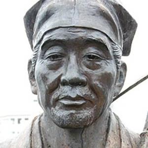

Matsuo Basho was one of the greatest Japanese poets to ever live. He elevated haiku to the level of serious poetry in numerous travel diaries. He was also referred to as “Sengin”, which is his penname. It is rumored that his father may have been a low-ranking samurai.
